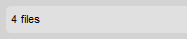

Lišta stavu (Status Bar) je umístěna v dolní části rozhraní CKFinder, která zobrazuje informace o zvoleném souboru, celkový počet souborů ve složce, atd.
Pokud je v CKFinder vybrán soubor, Lišta stavu zobrazí podrobné informace o tomto souboru, včetně jeho názvu, velikosti a data jeho poslední změny. Například:

Pokud nejsou vybrány žádné soubory, bude místo toho v Liště stavu zobrazen celkový počet souborů v současné složce. Například:

Pokud je složka prázdná, Lišta stavu zobrazí odpovídající zprávu. Například: